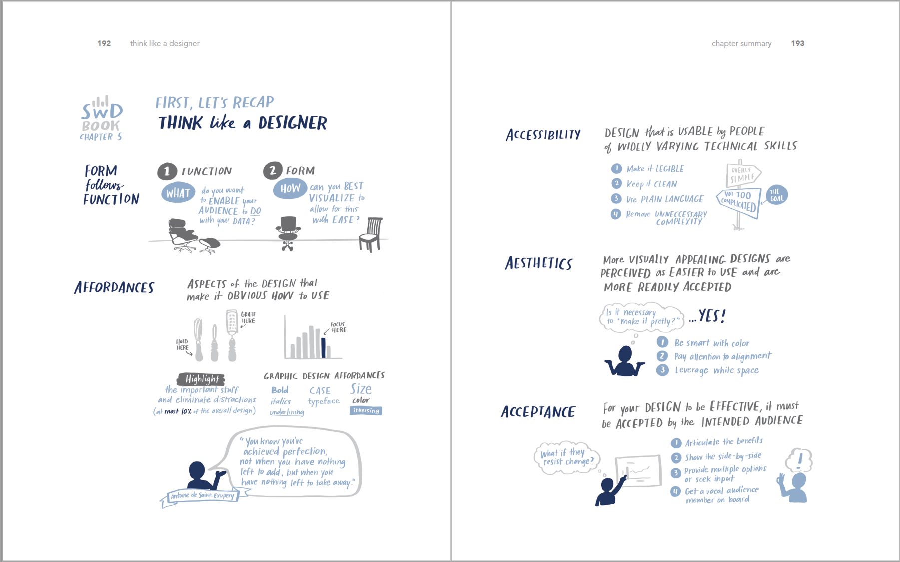

import pandas as pd
data = pd.read_excel(
"2.1 EXERCISE.xlsx",
sheet_name = "EXERCISE 2.1",
skiprows=6
)
data = data.drop('Unnamed: 0', axis=1)
data = data.rename(columns={ "Tier": "tier"
,"# of Accounts": "no_of_account"
,"% Accounts": "pct_of_account"
,"Revenue ($M)": "revenue"
,"% Revenue": "pct_of_revenue"})1. Motivation
Lấy cảm hứng từ bài post của thầy Nguyễn Chí Dũng về việc giải các exercise thuộc Chương 2 cuốn sách Storytelling with Data: Let’s Practice của tác giả Cole Nussbaumer Knaflic sử dụng R, mình muốn cải thiện 1 bảng biểu nhưng sử dụng Python (trong cuốn sách gốc, tác giả sử dụng Excel để makeover các graph).
Đây là một cuốn sách hay về chủ để visualization, dành cho những người sử dụng biểu đồ nhiều để communicate trong công việc. Cụm từ “storytelling” đang được sử dụng rất nhiều, thậm chí như là một buzzword, một keyword cần có trong CV của mỗi người làm data. Đối với mình, “storytelling” chỉ nên được sử dụng khi bạn đã có sẵn các kết quả phân tích, được thực hiện một cách khoa học, và bạn muốn truyền tải nó tới business unit/management một cách hiệu quả. “Storytelling” nên không bao giờ là động cơ để bạn thực hiện một phân tích (thứ thay vào đó nên là một câu hỏi), thiên kiến sẽ ảnh hưởng tới phương pháp thực hiện, và rất dễ nảy sinh ngụy biện khi kết luận. Hãy xem bài viết này của Keith McNulty và discussion trên Linked In.

2. Let’s Practice
Mình đang học {ggplot2} trên R để thực hành hình ảnh hóa dữ liệu, tuy nhiên có vẻ package này (và tương ứng là plotnine trên Python không phù hợp cho báo cáo bảng). Trong bài post, thầy Dũng cũng sử dụng một library khác là kableExtra (tham khảo đây).
Sau một lúc google thì có vẻ có một package của Python phù hợp để làm nhiệm vụ này, đó là great_tables (tham khảo đây). Package này cũng được khuyến khích sử dụng cho mục đích communication bởi Emily Riederer.
2.1. Import the data
Okay đầu tiên cần import và làm sạch dữ liệu. Bảng có sẵn trong file Exercise có vẻ dùng để báo cáo hơn là lưu trữ dữ liệu.
2.2. Data manipulation
Yep giờ ta đã có 1 bảng data khá sạch, tuy nhiên lưu ý là bảng đang không thể hiện toàn bộ dữ liệu (total của pct_of_account chỉ là 81.86%). Ta cần tính toán thêm All other và Grand Total (lý do là mình chưa tìm thấy function hiển thị Grand Total với package đang sử dụng, ngay cả trong ví dụ này, GT cũng sử dụng data đã có sẵn Grand Total).
all_other_pct_of_account = 1 - data["pct_of_account"].sum()
all_other_no_of_account = round(all_other_pct_of_account / data["pct_of_account"][0] * data["no_of_account"][0],0)
all_other_pct_of_revenue = 1 - data["pct_of_revenue"].sum()
all_other_revenue = round(all_other_pct_of_revenue / data["pct_of_revenue"][0] * data["revenue"][0],3)
all_other = pd.Series({ "tier": "All other",
"no_of_account": all_other_no_of_account,
"pct_of_account": all_other_pct_of_account,
"revenue":all_other_revenue,
"pct_of_revenue": all_other_pct_of_revenue})
data = pd.concat([data, all_other.to_frame().T], ignore_index=True)
data.loc[len(data.index)] = data.sum()
data.loc[data.index[-1], 'tier'] = 'Grand Total'Show the data:
from great_tables import GT
(
GT(data)
.fmt_number(columns= ["no_of_account","pct_of_account","revenue","pct_of_revenue"],decimals=2))| tier | no_of_account | pct_of_account | revenue | pct_of_revenue |
| A | 77.00 | 0.07 | 4.67 | 0.25 |
| A+ | 19.00 | 0.02 | 3.93 | 0.21 |
| B | 338.00 | 0.31 | 5.98 | 0.32 |
| C | 425.00 | 0.39 | 2.80 | 0.15 |
| D | 24.00 | 0.02 | 0.37 | 0.02 |
| All other | 205.00 | 0.19 | 0.94 | 0.05 |
| Grand Total | 1,088.00 | 1.00 | 18.70 | 1.00 |
2.3. Visualization
Được rồi, giờ ta có thể dùng great_tables để tiến hành visualize. Về cơ bản, chỉ cần khởi tạo một object GT() có thể mở rộng được, các element/hoặc format được định nghĩa về sau.
Dưới đây chúng ta trình bày một bảng đơn giản với tiêu đề, tên cột, cũng như định dạng lại dữ liệu.
(
GT(data)
.tab_header(title="New client tier share")
.cols_label(
tier = "Tier",
no_of_account = "# of Accounts",
pct_of_account = "% Accounts",
revenue = "Revenue ($M)",
pct_of_revenue = "% Revenue"
)
.fmt_number(columns="no_of_account",decimals=0)
.fmt_percent(columns=["pct_of_account", "pct_of_revenue"], decimals=2)
.fmt_currency(columns = "revenue", currency="USD", decimals=2)
.tab_source_note(source_note="Figure 2.1b: Slightly improved table")
)| New client tier share | ||||
|---|---|---|---|---|
| Tier | # of Accounts | % Accounts | Revenue ($M) | % Revenue |
| A | 77 | 7.08% | $4.67 | 25.00% |
| A+ | 19 | 1.75% | $3.93 | 21.00% |
| B | 338 | 31.07% | $5.98 | 32.00% |
| C | 425 | 39.06% | $2.80 | 15.00% |
| D | 24 | 2.21% | $0.37 | 2.00% |
| All other | 205 | 18.84% | $0.94 | 5.00% |
| Grand Total | 1,088 | 100.00% | $18.70 | 100.00% |
| Figure 2.1b: Slightly improved table | ||||
Trông ổn (ít nhất là trình bày số liệu một cách toàn vẹn) so với bản gốc rồi!
Tiếp tục, ta dùng - helper md() để định dạng lại tiêu đề; - sử dụng .data_color() để tạo heatmapping; - sử dụng tab_style() để format dòng Grand Total; - sử dụng .opt_stylize() để theming.
from great_tables import md, style, loc
(
GT(data)
.tab_header(title=md("<strong>New client tier share</strong>"))
.opt_align_table_header(align="left")
.cols_label(
tier = "Tier",
no_of_account = "# of Accounts",
pct_of_account = "% Accounts",
revenue = "($M) Revenue", # change the label
pct_of_revenue = "% Revenue"
)
.fmt_number(columns="no_of_account",decimals=0)
.fmt_percent(columns=["pct_of_account", "pct_of_revenue"], decimals=0) # changed decimals
.fmt_currency(columns = "revenue", currency="USD", decimals=1)# changed decimals
.tab_source_note(source_note="Figure 2.1c: Table with heatmapping")
.data_color(
columns=["pct_of_account", "pct_of_revenue"],
palette=["#57A6A1", "#577B8D", "#344C64", "#240750"],
domain=[0, 1],
na_color="lightgray",
autocolor_text = False
)
.tab_style(
style=[
style.text(style="bolder"),
style.fill("#EEEEEE"),
style.borders(sides=["top", "bottom"], weight='2px', color="grey")
],
locations=loc.body(rows=[6])
)
.opt_stylize(style=5 ,color='blue')
)| New client tier share | ||||
|---|---|---|---|---|
| Tier | # of Accounts | % Accounts | ($M) Revenue | % Revenue |
| A | 77 | 7% | $4.7 | 25% |
| A+ | 19 | 2% | $3.9 | 21% |
| B | 338 | 31% | $6.0 | 32% |
| C | 425 | 39% | $2.8 | 15% |
| D | 24 | 2% | $0.4 | 2% |
| All other | 205 | 19% | $0.9 | 5% |
| Grand Total | 1,088 | 100% | $18.7 | 100% |
| Figure 2.1c: Table with heatmapping | ||||
Tiếp theo, chúng ta sẽ thử dùng fmt_nanoplot() để tạo một bar plots thay cho hai cột percentage.
Đây là một tính năng trong giai đoạn thử nghiệm nên mình thấy chưa thực sử ổn định và tuân theo document mà nhà phát triển đề cập. Trong ví dụ dưới đây mình sử dụng data bar, loại bỏ format do hàng cuối cùng. Tuy nhiên, đồ thị vẫn include giá trị 100% ở hàng Grand Total để điều chỉnh bar scale.
Thêm nữa mình cần chuyển dataframe về polar dataframe, khi đó một column của dl.df là iterable.
from great_tables import md, style, loc, nanoplot_options
import numpy as np
import polars as pl
data.at[6, "pct_of_account"] = np.nan
data.at[6, "pct_of_revenue"] = np.nan
# so that the data scale looks better
pl_data = pl.from_pandas(data)
(
GT(pl_data, rowname_col="tier")
.tab_header(title=md("<strong>New client tier share</strong>"))
.opt_align_table_header(align="left")
.tab_source_note(source_note="Figure 2.1d: Table with data bar")
.cols_label(
tier = "Tier",
no_of_account = "# of Accounts",
pct_of_account = "% Accounts",
revenue = "($M) Revenue", # change the label
pct_of_revenue = "% Revenue"
)
.fmt_number(columns="no_of_account",decimals=0)
.fmt_currency(columns = "revenue", currency="USD", decimals=1)
.fmt_percent(columns=["pct_of_account", "pct_of_revenue"], decimals=0) # changed decimals
.cols_width(
cases={
"tier": "20%",
"no_of_account": "20%",
"pct_of_account": "20%",
"revenue": "20%",
"pct_of_revenue": "20%"
}
)
.fmt_nanoplot(
columns="pct_of_account",
rows = [0,1,2,3,4,5],
plot_type="bar",
plot_height = "3em",
autoscale=True,
options=nanoplot_options(
data_bar_stroke_color="#577B8D",
data_bar_stroke_width=80,
data_bar_fill_color="#577B8D",)
)
.fmt_nanoplot(
columns="pct_of_revenue",
rows = [0,1,2,3,4,5],
plot_type="bar",
plot_height = "3em",
autoscale=True,
options=nanoplot_options(
data_bar_stroke_color="#577B8D",
data_bar_stroke_width=80,
data_bar_fill_color="#577B8D",)
)
.tab_style(
style=[
style.text(style="bolder"),
style.fill("#EEEEEE"),
style.borders(sides=["top", "bottom"], weight='2px', color="grey")
],
locations=loc.body(rows=[6])
)
.tab_style(
style=[
style.text(color="#EEEEEE", size=0.5),
],
locations=loc.body(rows=[6], columns=["pct_of_account", "pct_of_revenue"])
)
.opt_stylize(style=3 ,color='blue')
)| New client tier share | ||||
|---|---|---|---|---|
| # of Accounts | % Accounts | ($M) Revenue | % Revenue | |
| A | 77 | $4.7 | ||
| A+ | 19 | $3.9 | ||
| B | 338 | $6.0 | ||
| C | 425 | $2.8 | ||
| D | 24 | $0.4 | ||
| All other | 205 | $0.9 | ||
| Grand Total | 1,088 | None | $18.7 | None |
| Figure 2.1d: Table with data bar | ||||
great_tables vẫn chưa thực sự render ra được bảng biểu đúng như setting.
Bài thực hành đến đây là kết thúc! 🚀